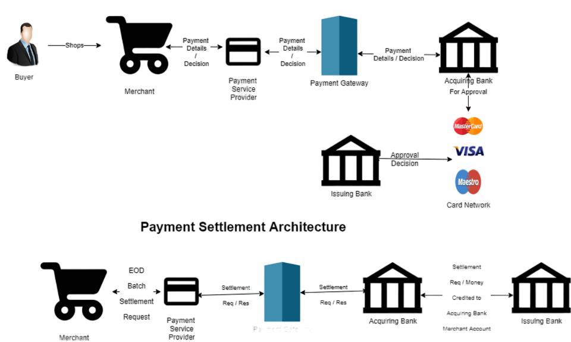

- Course Name : Algorithmic Problem Solving
- Course Code : 23ECSE309
- Name : Indudhar G J
- University : KLE Technological University,Hubballi-31
Introduction
Visa is multinational digital payment technological company.It is one of the world's largest retail electronic payments networks and is a leader in digital payments.It handles over 65,000 transaction per second and helps in fraud detection and assured payments for merchants. It offers quick, secure and convenient access to your money in person, online, overseas and over the phone.It issues credit card,debit card and pre-paid cards which helps customers to make cashless payments. It has also gained trust of user through decreasing the number of faulty payments ,also it provides instant transfer of funds into the bank accounts. Visa also give offers and rewards on specific payments which helps attract customers and give cashbacks to them.
Why Portfolio?
This portfolio demonstrats how various algorithms can be implement in the domain of digital payments to ease the process and increase customer satisfaction and also generate more profit for the company by analyzing specific patterns and also increase security. Applying these advanced algorithms and data structures could help a company to easily analyze data and take actions accordingly in real-time.
Objectives
The objectives of this portfolio are :

Business use cases
-
1. Detecting high volume transation clusters.
Data Structure/Algorithm used : Graph
Creating a graph of transactions and running DFS to identify clusters of accounts that have high transaction volumes among them.Using graph data structures, where nodes represent accounts and edges represent transactions. Algorithms like Depth-First Search (DFS) can be used to detect cycles and high volume transaction patterns.
Challenges : Need to build the graph first ,which takes lot of time and storage.
Time Complexity : O(V+E)
Space Complexity : O(V+E)
-
2. Faster retrieval of transaction details.
Data Structure/Algorithm used : Hash Tables
Utilizing hash tables for storing and retrieving transaction records, user data, and other frequently accessed information.Where transaction ID is stored as keys and transaction details as values in a hash table, allowing O(1) average time complexity for lookups.Hence reduces the time required to access critical data, enhancing customer service.
Challenges : Need to handle collisions , may take more space inorder to handle the collisions.
Time Complexity : O(N)
Space Complexity : O(N)
-
3. Retrieval of the data related to a specific card numbers
Data Structure/Algorithm used : Trie
We can use trie data structures to store and search card numbers, ensuring quick validation and retrieval of data.Store card numbers in a trie, where each digit is a node. This allows for faster lookup and prefix matching, which can be used in validating card numbers and detecting invalid card entries.It improves the speed and accuracy of validating card transactions.
Challenges : Requires a lot of memory
Time Complexity : O(N)
Space Complexity : O(N)
-
4. Faster retrieval of transaction records in sorted order
Data Structure/Algorithm used : Radix Tree
Using Radix Tree we can perform faster insertion, deletion, and lookup of transactions details. Also we can use a Radix to maintain a sorted list of transactions based on transaction time or amount, enabling efficient retrieval and updates.
Time Complexity : O(N*K)
Space Complexity : O(N+K)
-
5. Searching for a account details using name of card holder
Data Structure/Algorithm used : Knuth-Morris-Pratt algorithm
Visa is a huge company and has a large database and if it want to search for a specific account/user/transaction it would take a lot of time.So we can use Knuth-Morris-Pratt (KMP) algorithm for fast pattern matching in strings. We can use the KMP algorithm to search for specific account in transactions/database and retreive the information.
Challenges : The preprocessing of data is required.
Time Complexity : O(N)
Space Complexity : O(M)
-
6. Kadane's Algorithm for Maximum Subarray Sum
Data Structure/Algorithm used : Kadane's Algorithm
Visa can use Kadane's algorithm to detect periods of high spending in transaction data snd with the help of this Visa can rent out more servers before hand ,so that transaction do not get delayed in those peak time.
Time Complexity : O(N)
Space Complexity : O(1)
-
7. Update the account balance
Data Structure/Algorithm used : Segment Tree
Quick and reliable transaction is one of the motive of Visa Cards. Therefore the Account balance of both the parties has to be updated with the new balance within seconds.So we can use persistent segment trees to update the balance of accounts.Using segment trees reduces the time to update the balances. We can traverse the data down the tree when the user views the balance.
Time Complexity : O(N)
Space Complexity : O(N)
-
8. Improve marketing
Data Structure/Algorithm used : Union-Find
Visa can use Union-Find to manage groups of users who are connected through various criteria, such as geographical locations, transaction patterns, or membership in loyalty programs. This helps in targeting marketing campaigns more effectively.
Time Complexity : O(N * log N)
Space Complexity : O(N)
-
9. Prioritizing transactions based on Card type
Data Structure/Algorithm used : Max-Heap
Visa has a variety of cards, the more premium cards has to be given more priority because their contribute more to the profit of the company than others and frequency and volume of the transaction is higher. Higher ranked cards can be given priority for transaction when there are huge amount of requesting coming.
Challenges : Insertion and deletion operation require rebalancing, which requires a lot of time.
Time Complexity : O(N * log N)
Space Complexity : O(1)
-
10. Network resource utilization
Data Structure/Algorithm used : Ford-Fulkerson
A transaction needs to be completed without delay and failures, so the load on server as to be distributed equally. Even if one server fails then the transaction has to be completed by another server with least load. The trust of merchant and customer plays a huge in growth of the company. To acheive this we can use Max flow algorithms like Ford-Fulkerson which can help assist load balancing across servers and minimize network congestion. The network is abstracted as a graph with capacities assigned to the edges. The Max flow algorithm finds the optimal flow path that maximizes throughput at minimum cost. However, the capacities need to be updated dynamically (real-time).
Time Complexity : O(maxFlow * E)
Space Complexity : O(1)
-
11. Manage server load
Data Structure/Algorithm used : Kadane's Algorithm
Around 65000 transaction happen every second and the each transaction must be completed within seconds of their initiation. The time required to get and send data to the servers contribute to the major time of the whole transaction time. Find from what time to what time do the most number of transactions happen using Kadane's Algorithm so that you can optimize the servers to handle the load.
Time Complexity : O(N)
Space Complexity : O(1)
-
12. Faster transmission of data
Data Structure/Algorithm used : Huffman coding
As discussed above the duration of a transaction is very crucial for user for satisfaction.Hence we can decrease the duration by using Huffman coding compression algorithm ,so that the data transmission time gets reduced by decreasing the time to transfer the card infrmation between the customer bank server and the merchent bank server.
Time Complexity : O(N)
Space Complexity : O(1)
-
13. Validating a card
Data Structure/Algorithm used : Bloom filter
The transactions must happen only with valid cards and to verify the card we can use Bloom filter algorithm for checking if a card is blocked, expired, blacklisted before you begin a transaction.If not, then you can continue with transaction else you can cancel the transaction.
Time Complexity : O(N)
Space Complexity : O(N)
-
14. Transmitting information securly
Data Structure/Algorithm used : RSA
The data related to the Account and card need to carefuly handled as any leak of information can cause misuse or these cards. we can use algorithms like RSA to send secure information like Card PIN and other data between the server and the transacting machine.
Challenges : Has high time complexity
Time Complexity : O(N^3)
Space Complexity : O(1)
-
15. Giving offers and rewards
Data Structure/Algorithm used : Kadane's Algorithm
Visa gives rewards and offers on thier card to increase the usage of their cards and hence increase their profit. To make the customers use their cards more frequently we can use a version of Kadane's Algorithm to find the period of the year when they use their card the least and hence give offers during that time period.
Time Complexity : O(N)
Space Complexity : O(1)
-
16. Optimizing the data storage in servers
Data Structure/Algorithm used : K-D Trees
It is important to complete the transaction within seconds and to acheive this the data between the server and local machine should be quick. Hence, storing the data in appropriate locations would enchance the chance of a successful and quick transaction. to acheive this we can use KD trees to select the server based on locations where the cards were used historically.
Challenges : The efficiency decreases as the size of data increases
Time Complexity : O(N)
Space Complexity : O(N)
Conclusion
This portfolio demonstrates how algorithms and data structures can be improve the digital payments.By using these smart data structures and algorithms, we can make the cashless transactions more easier, faster, and more reliable. This helps customers process payments quicker, makes the process smoother for merchants. Overall, these improvements can make the payment experience better for everyone.
Refrences
Wikipedia, "K-d tree," [Online]. Available: https://en.wikipedia.org/wiki/K-d_tree.
GeeksforGeeks, "RSA Algorithm in Cryptography," [Online]. Available: https://www.geeksforgeeks.org/rsa-algorithm-cryptography/.
System Design, "Bloom Filters Explained," [Online]. Available: https://systemdesign.one/bloom-filters-explained/.
S. Inc, "Payment Processing Architecture," Medium, 18-Aug-2018. [Online]. Available: https://medium.com/@sriram.inc/payment-processing-architecture-9651e7292b0c.